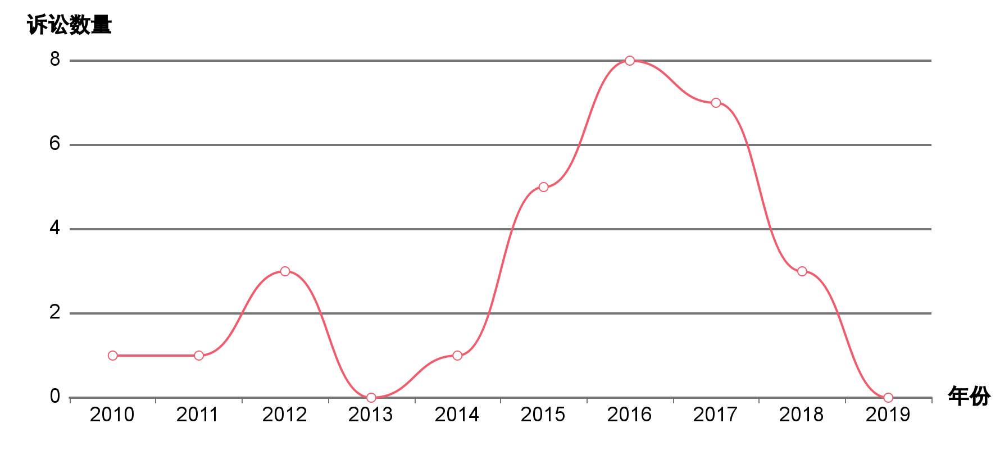

系统正在制作城市分析报告
(10s)
系统正在制作城市分析报告
(10s)
快闪分析主要参考指标涵盖以下12个维度：
专利概况
整体概览
如下饼图显示了该技术领域内法律状态和专利类型的百分比。
有助于：了解该技术领域内有效和无效专利的占比情况。专利类型的分布表明公司类型，他们是专注于保护发明专利的功能还是外观。(简单法律状态数据覆盖范围：AT / AU / AR / BE / BR / CA / CH / CN / CO / CR / CS / CU / CZ / DD / DE / DK / EA / EE / EP / ES / FI / FR / GB / GR / HU / HK / IE / IL / IT / JP / KR / LT / LU / MC / MD / MX / NL / NO / NZ / PE / PH / PL / PT / RU / SE / SG / SI / SK / SV / TW / US)

专利趋势
图表显示了该技术领域内每年专利申请及授权的数量。绿色表示申请趋势，黄色表示授权趋势。
有助于：了解该技术领域内的专利趋势。此外，图表也展现了这项技术是何时开始兴起的，是新兴技术还是已逐渐步入衰退期。
新兴公司
新兴图表展示了仅在过去5年内提交专利申请的公司，以专利数量最多的公司进行排序。
有助于：在技术领域找到潜在的新兴公司。 这些初创的公司表明了在该领域的新型竞争。 与此同时，这些新兴公司可以被视为潜在的收购或合作机会。
地理分布
地理分布图
图表显示了该科技领域的全球研究的前沿地区。
有助于：了解该技术领域在不同国家区域的发展。
年度地理分布战略
图表展现了该技术领域在前沿地区的专利公开趋势。
有助于：了解该技术领域逐步渗透或改变方向的市场领域。这帮助用户了解特定地区内的专利公开趋势以及是否有投资利用的机会。
技术分布
技术焦点
图表将该技术领域的专利进行技术归类，矩形大小对应的是专利数量
有助于：了解该技术领域内可应用的不同技术和潜在机会。该信息可用于识别特定技术领域内跨界应用的机会。

年度技术战略
图表显示了该技术领域内研发方向和技术分支随时间的变化趋势。
有助于：了解所搜索的技术在不同应用中技术方向和投资情况的变化趋势。
重点专利
被引用最多的专利
图表显示了被引用次数最多的前10项专利。
有助于：识别哪些专利已广泛应用并且有很多人借鉴这些技术，这些专利更具影响力并代表着公司的核心创新技术。
规模最大的专利家族
图表显示了属于较大专利家族的前10项专利。
有助于：确定全球范围内规模最大的专利家族，并且识别出众多地区中最为成功的发明专利并在全球范围内采取保护措施。
权利要求的数量
图表显示了前10项权利要求数量最多的专利。
有助于：识别出权利要求数量最多的专利，其技术的涉及范围更广。大量的权利要求项是为了保护多项技术，相应起草交底书的工作量也会很大。
最长诉讼专利
该图显示了专利的诉讼周期时间最长的前10项专利。
有助于：确定讼周期时间最长的专利诉讼。 长期的诉讼案件可能涉及大量的准备工作，不可预知的诉讼结果以及外包法律咨询，因此可能会产生非常昂贵的诉讼费用。 涉及长期诉讼案件的专利可能代表公司最有价值的技术，所以公司愿意投入更多的时间和金钱来争取专利权的所属。
主要发明人
主要发明人
图表显示了该技术领域内的主要发明人。
有助于：确定为大多数专利的产生做出贡献的主要发明人。此信息有助于评估特定技术领域内的最佳人才并为该公司招募发明人。
发明人申请趋势
该图显示了过去20年来，该技术领域的主要发明人年度申请专利的情况
有助于：识别最近几年拥有很多专利申请的发明人，代表技术领域新兴或现有的人才。
专利续费趋势
续费/放弃趋势
图表显示了在过去20年中每年续费或放弃的专利数量。图表分析结果不包含再颁专利。（仅包括美国发明专利和中国专利数据，注意中美授权专利的不同缴费规则：美国发明专利为3.5，7.5和11.5年3次缴费，而中国专利为每年缴费。中国的续费和放弃信息更新至2017年。）
有助于：了解该技术领域内的续费和放弃专利的趋势。放弃的专利表示公司不再利用这项技术或看不到投资回报率，因此决定停止投资。续费的专利代表此发明既可以保持潜力，也体现了值得继续投资的回报率。借此可以判断是否值得研究相似的技术。
诉讼案件
诉讼概况
图表显示了在过去20年中每年续费或放弃的专利数量。图表分析结果不包含再颁专利。（仅包括美国发明专利和中国专利数据，注意中美授权专利的不同缴费规则：美国发明专利为3.5，7.5和11.5年3次缴费，而中国专利为每年缴费。中国的续费和放弃信息更新至2017年。）
有助于：了解该技术领域内的续费和放弃专利的趋势。放弃的专利表示公司不再利用这项技术或看不到投资回报率，因此决定停止投资。续费的专利代表此发明既可以保持潜力，也体现了值得继续投资的回报率。借此可以判断是否值得研究相似的技术。
诉讼专利概念图
图表显示了从诉讼涉及的专利中提取的语义关键词。关键词的大小代表该词关联的案件数量（使用最新的10000条专利）.5，7.5和11.5年3次缴费，而中国专利为每年缴费。中国的续费和放弃信息更新至2017年。）
有助于：通过专利中出现的高频词汇了解技术领域。这突出了在该技术领域内持有专利的诉讼风险。
诉讼结果
图表显示了已结案的诉讼结果。(仅包括US/GB数据)。.5，7.5和11.5年3次缴费，而中国专利为每年缴费。中国的续费和放弃信息更新至2017年。）
有助于：了解已结案的诉讼与专利类型之间是否存在关联。借此了解该技术领域是否容易受到诉讼，可避免相关的风险。深入了解诉讼中关于解决方案的更多细节，如案件的具体流程和法官判案的经历。
诉讼时间线
图表显示了专利诉讼趋势。(仅包括US / CN / TW / JP数据)
有助于：确定与该技术领域相关的诉讼频率，借此了解进入该技术领域的风险等级。
主要原告
该图显示了技术领域前十名最具诉讼力的组织。(仅包括US / CN / TW / GB / JP数据)
有助于：寻找已经宣称最多专利的组织，并对周边相似组织提供诉讼威胁警示。
最多诉讼专利
图表显示了该技术领域内涉及诉讼最多的专利
有助于：确定构成最高诉讼威胁的专利，这代表了值得注意的研发雷区。
许可交易
专利许可时间线
图表显示了该技术领域内的专利许可趋势。
有助于：了解该技术领域内获得过许可的专利所有权以及合作的可能性。
专利市场价值
价值概况
专利价值分布
价值分布图基于专利的价值对专利进行评级。
有助于：通过不同级别的分析，可以更好地评估该技术领域内专利强弱的分布。
行业基准比对
行业基准比对图将所选专利组合比对相关行业的平均专利价值水平。
有助于：评估该技术领域的创新能力。
市场价值最高的专利
最有价值的专利是指该技术领域内具有最高专利价值的简单同族。
有助于：找出该技术领域内最有价值的专利，并指出有投资机会的技术领域和想法。专利寿命是指该专利的受保护期限。

主要公司
主要公司
图表显示了该技术领域内主要公司专利总量的整体对比。
有助于：了解该技术领域内的主要公司和竞争威胁。
专利年趋势
图表显示了持有相似专利组合的公司的年度专利公开趋势。
有助于：比对一个组织和其他有相似专利组合的组织的专利活动。
专利地域趋势
图表显示了拥有相似专利组合的公司专利地域趋势（申请和授权）。
有助于：比对一个组织和其他有相似专利组合的组织的专利申请地域分布。
专利科技领域趋势
图表显示了该科技领域内在不同技术点上主要公司所拥有的专利数量。
有助于：了解相关技术领域内的主要公司及不同技术侧重点上的差异。
领域地图
领域地图显示了该技术领域内主要公司的专利关键词。格子数量表示每家公司的专利覆盖率，每个格子代表相同数量的专利。（使用最新的10000条专利）
有助于：更深入地了解该技术领域内主要公司相关的技术概念，借此区分不同公司的技术焦点。
创新词云
创新词云
标签云提取了该技术领域中最近10,000条专利中最常见的关键词。
有助于：快速了解该技术领域内的重点研发主题。
旭日图
圆形图从最近10,000条专利中提取语义关键词，外层的关键词是内层关键词的进一步分解。
有助于：理解该技术领域内更详细的技术焦点。